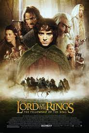

Site structure
I will break down each film by title, image, a brief synopsis, a list of some of the actors within the film, what I do/don't like about it (if I don't state that it's a dislike that means it's a like) and finally a trailer.
Fear And Loathing in Las Vegas
The big-screen version of Hunter S. Thompson's seminal psychedelic classic about his road trip across Western America as he and his large Samoan lawyer searched desperately for the "American dream"... they were helped in large part by the huge amount of drugs and alcohol kept in their convertible, The Red Shark.
Actors
- Johnny Depp
- Benicio Del Toro
- Christina Ricci
Likes/dislikes
- Love the soundtrack!
- I love the way they portray the drug trips
- I don't like the Orangutang in clothing, I hope he was treated well and able to live naturally and wasn't just a 'show monkey'
Lord Of The Rings trilogy
A hobbit named Frodo inherits the One Ring, which can destroy the entire world. With the recently reawakened evil, being Sauron, going after the Ring to cement his reign, Frodo joins with eight others to destroy the Ring and defeat Sauron.
Actors
- Elijah Wood
- Orlando Bloom
- Ian McKellen
Likes/dislikes
- The cinematography is amazing
- The battles are great and even the ones in the dark have been shot in a great way so you can see everything(unlike house of dragons / Game of thrones)
- **spoiler** Sean Bean dies; not so much a like but it's a thing isn't it he has to die in pretty much every role
Inception
A thief who steals corporate secrets through the use of dream-sharing technology is given the inverse task of planting an idea into the mind of a C.E.O., but his tragic past may doom the project and his team to disaster.
Actors
- Leonardo DiCaprio
- Joseph Gordon-Levitt
- Elliot Page
Likes/dislikes
- The ending, **spoiler** the fact that it could go either way as to whether he is still dreaming
- The scene where Elliot Page is first introduced to building the dream world
- I both like and dislike the ending, **spolier** my preference is for a final outcome but I do really appreciate how it ends just as you think the spinner will stop
A Nightmare On Elm Street part 3: Dream Warriors

A psychiatrist familiar with knife-wielding dream demon Freddy Krueger helps teens at a mental hospital battle the killer who is invading their dreams.
Actors
- Robert Englund
- Heather Langenkamp
- Patricia Arquette
Likes/dislikes
- **spoiler** The bit where Freddy turns one of the kids into a puppet
- **spoiler** I don't like the bit where the kid who is mute can suddenly scream and that somehow stops Freddy, makes no sense to me
- **spoiler** I also find it annoying how Nancy tries to convince the other doctors to give the kids the dream blocker(hypnosil), she could have made a better argument
Ferris Bueller's Day Off
A popular high school student, admired by his peers, decides to take a day off from school and goes to extreme lengths to pull it off, to the chagrin of his Dean, who'll do anything to stop him.
Actors
- Matthew Broderick
- Jennifer Grey
- Alan Ruck
Likes/dislikes
- This is another with a great soundtrack!
- Wouldn't we all have loved a day like this as a teen!
- Dislike - to be fair it is annoying that Ferris does seem to get away with everything so I sympathise with his sister
The Lost Boys
A mother and her two sons move to a small coast town in California. The town is plagued by bikers and some mysterious deaths. The younger boy makes friends with two other boys who claim to be vampire hunters while the older boy is drawn into the gang of bikers by a beautiful girl. The older boy starts sleeping days and staying out all night while the younger boy starts getting into trouble because of his friends' obsession.
Actors
- Kiefer Sutherland
- Corey Feldman
- Corey Haim
Likes/dislikes
- It's vampires, real vampires none of that sparkly nonsense!
- The scene with Tim Capello playing the saxophone
- Dislike - the sequel!! why spoil a perfectly great film with a terrible sequel.